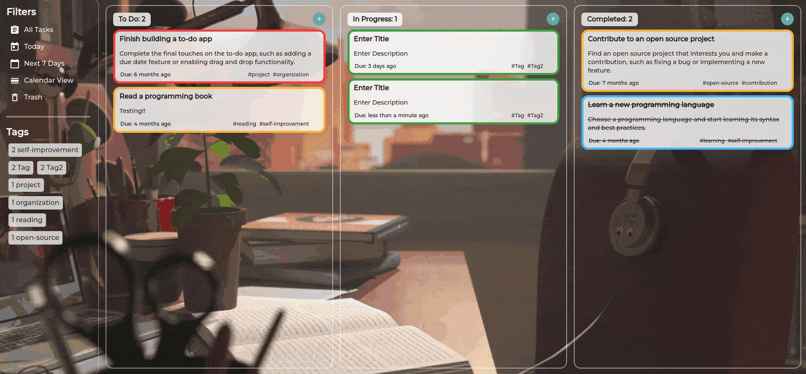
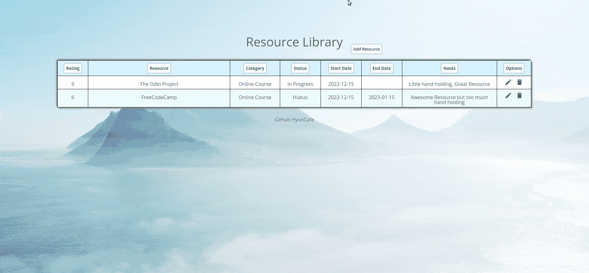
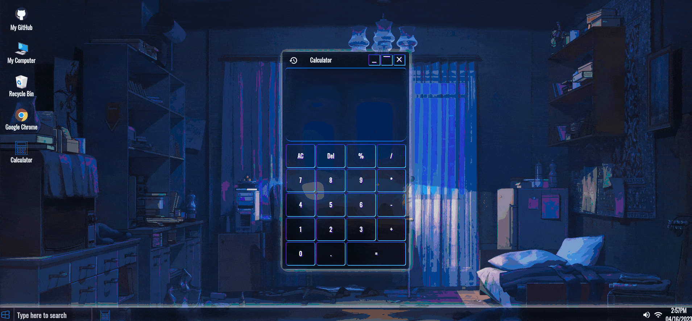
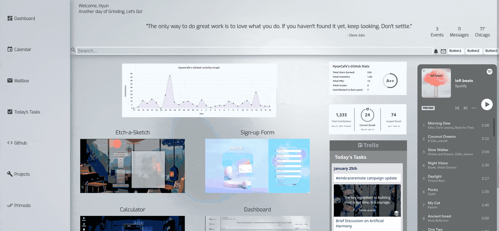
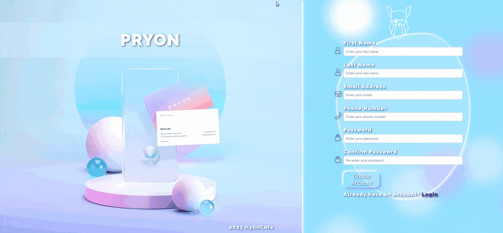
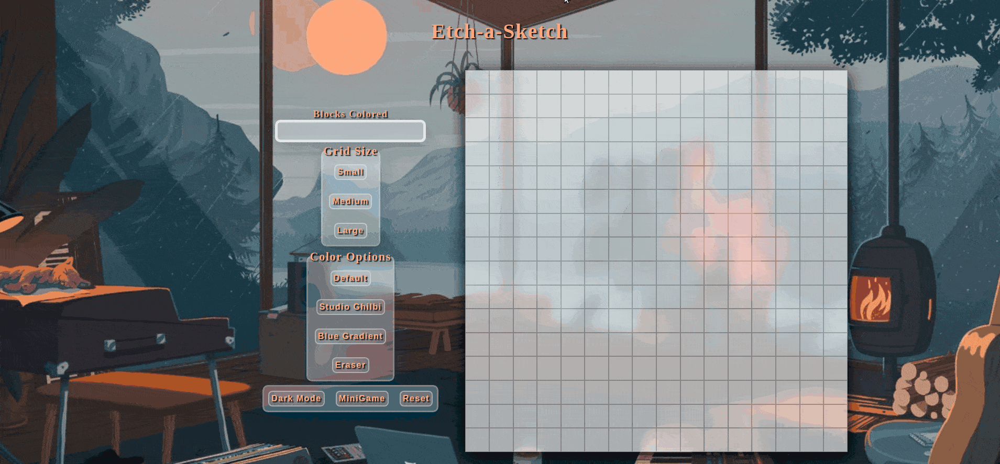

Hi, I'm Hyun
About Me
Enthusiastic software developer with a background in sales and customer service, passionate about problem-solving and creating user-friendly solutions. Driven by a desire for continuous learning, I hone my skills through resources like The Odin Project, 100devs, Udemy, mentorship, and hands-on project experience. Resourceful and tenacious, I tackle challenges and knowledge gaps by tapping into friends, online communities in Discord, and resources such as Google, Reddit, Stack Overflow, and ChatGPT. Eager to bring a fresh perspective and my passion for web development to make a meaningful impact in a rewarding role within the tech industry.
Skills
My Projects
-
To Do App
The ToDo App is an efficient task manager with drag-and-drop, color-coded priorities, tag tracking, and filtering. It offers a calendar view, responsive design, and local storage, utilizing libraries like Date FNS, FullCalendar, and SortableJS.
View on GitHub Live Demo
-
Restaurant Page

The Restaurant Page features modularity, webpack setup, DOM manipulation, and responsive design for an engaging and user-friendly experience, including a smooth pageload and hamburger menu for easy navigation.
View on GitHub Live Demo -
Tic Tac Toe

This tic-tac-toe game demonstrates game logic, state management, UI design, and responsive web design. Key features include a DOM-based game board, winning logic, computer vs. human gameplay, and a mobile-responsive design.
View on GitHub Live Demo -
Library
Library is a web app for managing resources in a table format with sorting and saving/loading capabilities through local storage, and full note view.
View on GitHub Live Demo -
Calculator
This calculator project showcases complex UI components and an intuitive user experience, supporting basic arithmetic operations and Windows-like features. The design includes a desktop simulation, search box, and right-click menu, emphasizing user-friendly design and responsiveness.
View on GitHub Live Demo -
Dashboard
The Dashboard project is a responsive web Dashboard with a visually appealing design, featuring material icons, a video theme background, and lazy loading for optimized page load times. It demonstrates diverse widget integration, such as a Spotify widget and Trello todo list, emphasizing adaptability and catering to various user preferences.
View on GitHub Live Demo
-
Signup Form
The Signup Form project showcases my skills in HTML and CSS, including semantic login forms and polished aesthetics. It highlights my ability to work with libraries like Font Awesome, validate code, debug, manage timelines, and create responsive designs, reflecting my commitment to web development skill improvement.
View on GitHub Live Demo -
Etchasketch
The Etch A Sketch web app lets users draw on a grid, featuring unique abilities like counting colored squares without recounting them. It includes three grid sizes, color modes, an eraser mode, and a reset button. The app also offers a dark mode with a glowing grid and responsive design for an enhanced user experience.
View on GitHub Live Demo